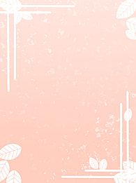

Chúc mừng sinh nhật cậu nha, Chúc cậu có một sinh nhật thật hạnh phúc. <3

Chỉ là tớ có vài lời muốn nói với cậu. Cũng đã lâu rồi hai đứa cũng chưa nói chuyện với nhau, và tớ cũng không biết hiện tại cuộc sống của cậu như thế nào, có tốt không, học tập có tốt không, do tớ cũng k thấy cậu đăng gì mạng xã hội cả. Mà cho tớ hỏi cái này có phải mỗi lần cậu nhắn tin với tớ thì cậu nghĩ là sẽ làm phiền tới tớ, cái này cũng không biết phải không, mà chắc là do tui nghĩ tào lao hihi, riết rồi tớ thấy tớ cũng bắt đầu ngại khi muốn nhắn tin cho cậu, nhưng mà tui thấy là mình có thể bình thường lại không, chứ sao tui thấy có khoảng cách, cảm giác bùn lắm, cản giác có những người bạn mà sao tui cảm thấy lạc lõng quá. Chỉ là tớ có vài điều muốn tâm sự hui nè. Cuối cùng thì chúc cậu có một sinh nhật thiệt vui vẻ nè, cũng 20 tủi rùi, cũng được gọi là lớn rùi, chúc cậu luôn thành công trên mọi chặng đường sắp tới nha !. Happy Birthday to you !!!
